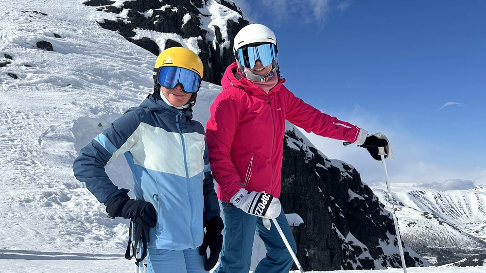
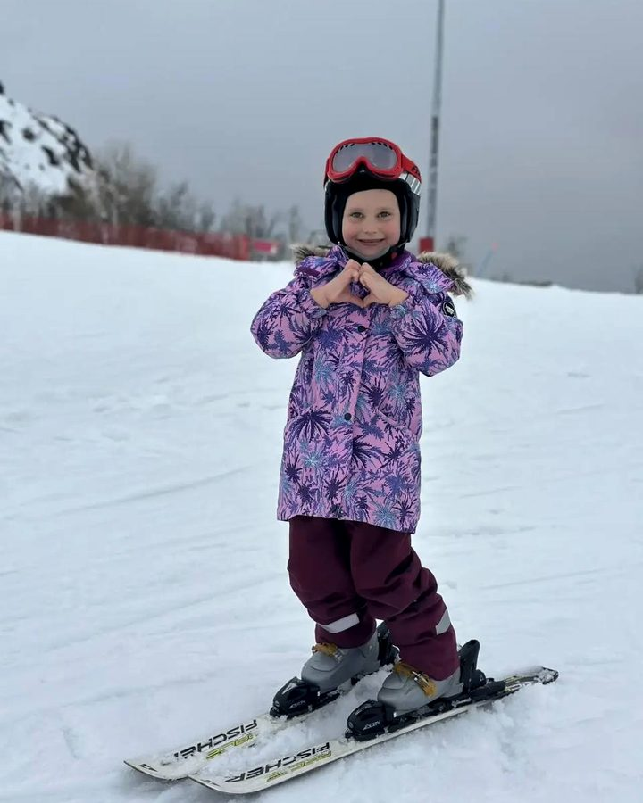
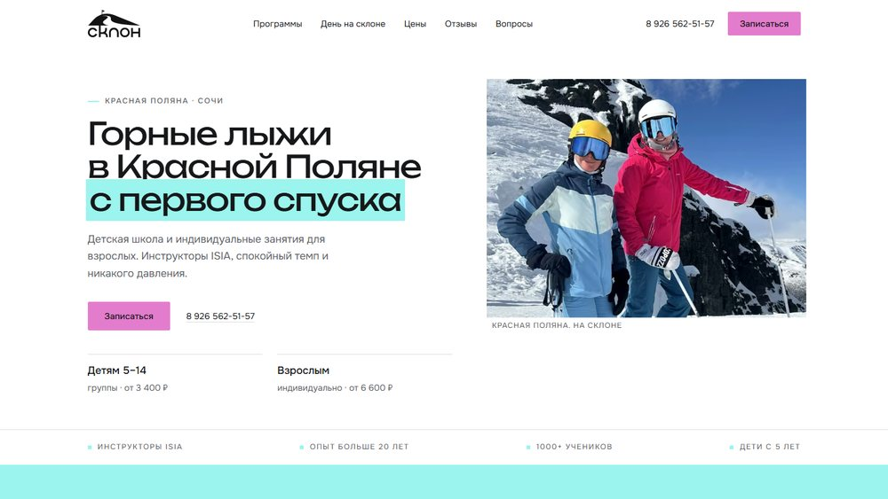

Вертикаль
Тёмный кинематографичный вариант. Крупная типографика, полноэкранный кадр, мятный и розовый акценты. Больше эмоции и атмосферы гор.
Открыть вариант 01Четыре варианта дизайна
Одинаковый контент, цены и фотографии — разный характер. Четвёртый вариант собран на основе действующего сайта школы: его фирменные цвета, фотографии и знакомство с основателями. Формы в демо-версиях визуальные: отправка подключается на следующем этапе.

Тёмный кинематографичный вариант. Крупная типографика, полноэкранный кадр, мятный и розовый акценты. Больше эмоции и атмосферы гор.
Открыть вариант 01
Светлый редакционный вариант. Literata и Onest, бумажный фон, бирюзовый акцент. Спокойный журнальный ритм и много воздуха.
Открыть вариант 02
Сервисный вариант: калькулятор стоимости, сравнение программ, таблицы и расписание. Сосна и сигнальный оранжевый, всё по делу.
Открыть вариант 03
Светлая версия на основе sklonski01.ru: мята, розовый и бумага. Крупная типографика, знакомство с Эльвирой и Владимиром, прозрачные цены, запись и живая мобильная кнопка звонка.
Открыть вариант 04